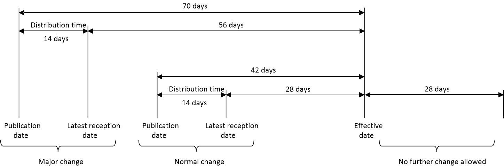

34 Aeronautical information and data objects
Aeronautical information is the authoritative description of the environment in which flights are planned and conducted. It includes publications, updates, coordinates, procedures, airspace boundaries, airport data, navigation aids, and many other objects that must remain consistent across flight planning systems, avionics, charts, and air traffic management tools.
This chapter treats aeronautical information as a data source. The operational meaning of FIRs, sectors, route structures, and air traffic services is introduced in the background chapters on airspace structure and air traffic services. Airport design and surface infrastructure are covered separately in airport and infrastructure data. Here the focus is on publication mechanisms, update cycles, object types, data formats, and quality caveats.
34.1 From AIS to AIM
Aeronautical Information Management (AIM) covers the collection, validation, publication, exchange, and dissemination of aeronautical data. It evolved from paper-oriented aeronautical information services toward digital, machine-readable data management. The goal is not only to publish information for pilots, but also to feed navigation databases, flight planning systems, air traffic management systems, airport systems, and research datasets.
Typical AIM products include:
- Aeronautical Information Publication (AIP);
- AIP supplements and amendments;
- Notice To Airmen (NOTAM);
- Prefilght Information Bulletin (PIB);
- Aeronautical Information Circular (AIC);
- digital datasets such as AIXM packages, obstacle data, terrain data, procedure coding, and chart data.
For analysis, the main difficulty is that these sources mix stable, cyclically updated, and temporary information. A runway threshold, a restricted area, a route segment, and a temporary closure do not have the same lifetime or reliability profile.
34.2 AIP structure
An AIP contains aeronautical information of lasting character essential to air navigation. AIPs are issued by states or by authorities acting on behalf of states, often the national ANSP or AIS provider. The high-level ICAO structure is standardized into three parts:
| Part | Scope | Examples of data |
|---|---|---|
| GEN | general information | responsible authorities, units of measure, abbreviations, time systems, charges, national procedures |
| ENR | en-route information | airspace structure, ATS routes, navigation aids, restricted areas, radio navigation services, en-route charts |
| AD | aerodromes and heliports | aerodrome data, runways, lighting, declared distances, procedures, charts, obstacles, local rules |
AIPs are often available online as eAIP documents. They are human-readable and increasingly structured, but not always easy to process automatically. Tables, charts, textual notes, and PDF procedures may encode information that is difficult to convert into clean geospatial data.
34.3 AIRAC cycles
Aeronautical data changes through internationally coordinated Aeronautical Information Regulation And Control (AIRAC) cycles. AIRAC follows a fixed 28-day rhythm, with effective dates published years in advance. This gives data users time to update flight management systems, ATC databases, procedure design tools, and charting systems before the change becomes operational.

For data analysis, the AIRAC cycle is a versioning key. A trajectory, a flight plan, and a route network must be interpreted against the aeronautical data effective on the date of operation. A waypoint, procedure, airspace boundary, or route restriction may differ across cycles.
34.4 NOTAM, SUP AIP, AIC, and PIB
Not all aeronautical information fits the regular AIP/AIRAC publication path.
| Product | Role | Typical use |
|---|---|---|
| NOTAM | time-sensitive notice distributed by telecommunication | runway closure, navigation-aid outage, temporary restricted area, obstacle, procedure unavailability |
| SUP AIP | temporary information of longer duration or with extensive text/graphics | major works, temporary procedures, large events, long-running airspace changes |
| AIC | explanatory or administrative circular | future procedure changes, regulatory information, safety campaigns, technical transition plans |
| PIB | pre-flight briefing package | NOTAM selection relevant to a flight, aerodrome, FIR, route, or area |
A NOTAM is not a general news item. It is operationally scoped information that must be known by personnel concerned with flight operations. A PIB is not a separate source of truth; it is a filtered compilation of NOTAM and related briefing information for a particular use case.
NOTAM text is compact, coded, and context dependent. Even when coordinates are present, interpretation may require knowing the affected aerodrome, FIR, procedure, schedule, vertical limits, and reference publication. Treat NOTAM parsing as information extraction, not as a simple table import.
34.5 Aeronautical data objects
Aeronautical information systems describe a large set of objects. The same objects appear in charts, flight plans, navigation databases, ATM systems, and analytical datasets.
34.5.1 Airports and aerodromes
At a macroscopic level an airport or aerodrome is identified by codes and represented by an aerodrome reference point. Detailed airport infrastructure data—runways, taxiways, parking positions, surface geometry, and operational metadata—is discussed in airport and infrastructure data. In aeronautical information, airports also act as anchors for procedures, NOTAM, declared distances, charts, and local rules.
34.5.3 Routes and route segments
An ATS route is a published structure connecting points through route segments. As data, a route segment normally has a start point, end point, directionality, distance, track, vertical limits, restrictions, and availability conditions. Some route networks are airway-based; others support free-route operations where aircraft file direct segments between allowed points.
Analysts should distinguish:
- a published route network;
- a filed route string in a flight plan;
- an accepted or regulated route after flow-management checks;
- the flown trajectory reconstructed from surveillance data.
These objects are related but not interchangeable.
34.5.4 Airspaces
Airspaces are geospatial volumes with lateral boundaries, vertical limits, classification, controlling unit, activation rules, and validity. They include FIRs/UIRs, controlled airspaces, terminal areas, control zones, restricted or danger areas, military areas, sectors, and flow-management regions.
The background chapter on airspace structure explains the operational meaning of FIRs, ACCs, sectors, and route structures. In data terms, the hard parts are geometry, vertical references, activation schedules, naming conventions, and versioning.
34.5.5 Procedures
Procedures connect aerodromes to the route network and support instrument operations:
- Standard Instrument Departure (SID) for departures;
- Standard Terminal Arrival (STAR) for arrivals;
- instrument approaches and missed approaches;
- holding procedures;
- transitions and runway-specific variants.
A procedure is not only a polyline. It may include altitude constraints, speed constraints, fly-by/fly-over path terminators, course or heading instructions, distance conditions, procedure turns, and equipment requirements. Procedure coding in avionics databases therefore requires more structure than a chart drawing.
34.6 Digital exchange formats
Two formats are especially important in digital aeronautical data workflows.
AIXM is a data exchange model for aeronautical information. It represents features such as airports, airspaces, routes, navaids, procedures, obstacles, and temporality. Its strength is that it can encode valid times, feature lifecycles, and complex relationships. Its complexity is also a barrier: practical use often requires domain-specific filtering and careful interpretation.
ARINC 424 is the navigation database coding standard used to encode procedures, waypoints, navaids, airports, and routes for avionics and flight management systems. It is operationally critical because it determines what pilots can select and fly in the cockpit. For analysis, ARINC 424 data is valuable but not always publicly accessible.
Other sources include eAIP tables, charting databases, national open-data portals, EUROCONTROL datasets, FAA data products, and community-maintained geospatial extracts. Each source differs in coverage, licensing, coordinate precision, and update process.
34.7 Quality and consistency caveats
Aeronautical data is authoritative, but not automatically analysis-ready:
- each object must be interpreted for the correct AIRAC cycle;
- coordinates may use different precision, datums, or publication conventions;
- vertical limits may reference flight levels, altitude, height above surface, or pressure settings;
- text notes can override or qualify tabular fields;
- temporary information may appear in NOTAM or SUP AIP rather than base AIP data;
- procedure geometry may differ between chart depiction, coded path terminators, and flown tracks;
- licensing can restrict redistribution of high-quality navigation data.
When joining aeronautical information with trajectories or flight plans, always keep the effective date, source, cycle, and object identifiers. A route or procedure decoded without its publication context can be misleading.
Glossary
- AIC
- Aeronautical Information Circular
- AIM
- Aeronautical Information Management
- AIP
- Aeronautical Information Publication
- AIRAC
- Aeronautical Information Regulation And Control
- NOTAM
- Notice To Airmen
- PIB
- Prefilght Information Bulletin
- SID
- Standard Instrument Departure
- STAR
- Standard Terminal Arrival